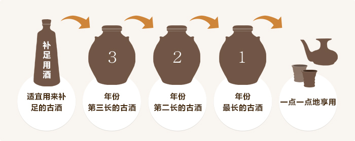

泡盛仅放于酒缸中成不了优质的陈酿古酒。
为了能持续享用泡盛芳醇的酒香和柔和的口感、需要进行shitsugi这个工序。通过shitsugi让原酒得到刺激活化、使得酒质更加安定。
您要不要尝试一下把泡盛视为家宝、传承百年、两百年的本酒厂的古酒制作呢?

首先准备三个酒瓮。
以存放年份最久的1号酒缸酒为母酒、再按年份顺序依次准备2号酒缸和3号酒缸。
母酒在每年的纪念日等日子开封一次、取出饮用少许后、从2号酒缸中舀出一部分泡盛补足到1号酒缸、再从3号酒缸中舀出一部分泡盛补足到2号酒缸。最后把另外准备的补足用一升泡盛补足到3号酒缸。

冲绳的先祖们就是运用了这一独特的手法来精心培育泡盛古酒、这样就可以随时饮用到美味的泡盛佳酒了。
无法自备多个古酒缸时、我们可以为您准备一立升43度的补足用古酒、敬请放心。